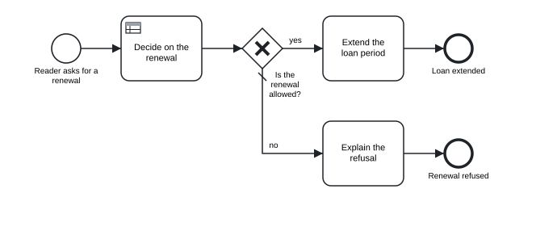

Chapter 13 Programming interfaces
In this chapter you will see how one engine in Rust reaches every host language · call tok from Python with tok.api · work with models as data frames in R with tokr, draw them with tok_plot() and write them in R Markdown and Quarto chunks · use Tok.jl and Tok.Engine in Julia · run the engine in a web page through WebAssembly · link the C library tokengine with tok.h · use the Rust crates from crates.io · choose the interface that fits your program
Everything tok does, from checking a document to simulating it, is written once, in Rust. The command tok, the language server, the MCP server and the playground are programs around that engine, and so are the packages for Python, R and Julia. This chapter is about using the engine from your own code: a script that checks every model of a repository, a notebook that draws a model next to its analysis, a web service that converts text to BPMN, a Julia experiment that simulates thousands of scenarios.
13.1 One engine, many bindings
The engine consists of a few Rust crates. The bindings are thin layers that pass text in and results out:
tok-core (parser, checker, printer, BPMN and DMN export and import, FEEL)
tok-bpmn (BPMN rules, layout, SVG) tok-sim (simulator)
│ │
│ tok-cli: the module tok_cli::api
│ ┌───────────┬───────────┬──────────────┼────────────┬──────────────┐
R tokr tok (CLI) tok-lsp tok-mcp tokengine tok-wasm Python tok-lang
(editors) (agents) (C, tok.h) (browser) (tok.api, tok mcp)
│
Julia Tok.jlThe functions in tok_cli::api take the text of a document and options as JSON and return a JSON result. The C library, the language server, the MCP server and the WebAssembly module call exactly these functions, so they accept the same options and give the same results; the Python package builds on the same crates, and the R package compiles the core crates into itself. The consequence for you is simple: every interface gives the same diagnostics, the same canonical text, the same files and the same simulation results, number by number for the same seed. A model checked in a notebook is checked exactly as in continuous integration, and a simulation in R can be reproduced in the playground.
| Interface | Package | Install | Best for |
|---|---|---|---|
| command line | tok |
pip install tok-lang or cargo install tok-cli |
shells, scripts, continuous integration |
| Python | tok-lang, module tok.api |
pip install tok-lang |
scripts, notebooks, services |
| R | tokr |
install.packages("tokr") |
data analysis, R Markdown and Quarto documents |
| Julia | Tok.jl |
Pkg.add("Tok") |
large simulation experiments, calibration |
| JavaScript | tok-wasm |
the WebAssembly module of the playground | web pages, browser tools |
| C and any language with a C interface | tokengine, header tok.h |
release archives, or a build from source | C, C++, Go, Zig, Fortran, … |
| Rust | tok-core, tok-bpmn, tok-sim, tok-cli |
crates.io | Rust programs |
The examples of this chapter use one small model: a loan renewal decided by a decision table, with simulation parameters.
tok 1.0 "Loan renewal"
start asked "Reader asks for a renewal"
rule decide "Decide on the renewal" decision=renewal result=renewal by=desk duration="tri(1m, 2m, 4m)"
xor allowed "Is the renewal allowed?"
task extend "Extend the loan period" by=desk duration="tri(1m, 3m, 6m)"
task explain "Explain the refusal" by=desk duration="tri(3m, 5m, 10m)"
end extended "Loan extended"
end refused "Renewal refused"
flow asked -> decide -> allowed
flow allowed -> extend "yes" when="renewal = \"allowed\""
flow allowed -> explain "no" default
flow extend -> extended
flow explain -> refused
inputdata renewals "Renewals so far" type=number
inputdata reserved "Reserved by another reader" type=boolean
decision renewal "Renewal" type=string requires="renewals reserved" hit=first
| reserved: boolean | renewals: number || renewal: string |
| true | - || "refused" |
| - | >= 3 || "refused" |
| - | - || "allowed" |
simulate cases=200 seed=3 arrival="exp(10m)"
resource desk "Loan desk" count=1
variable renewals "cat(0=0.5, 1=0.3, 2=0.15, 3=0.05)"
variable reserved "bern(0.1)"
Figure 13.1: The loan renewal used in the examples of this chapter.
13.2 Python
The package tok-lang on PyPI gives both the tok command and the module tok.api. It installs a wheel with the Rust engine compiled in, for every Python from 3.8: Windows x64, Linux x86_64 and aarch64, and macOS for Intel and Apple silicon. On another platform pip builds the engine from the source archive, which needs Rust.
Every function of tok.api takes the text of a document (or of a BPMN file):
| Function | Command | Result |
|---|---|---|
check(text, lang="en", level="full", bpmn=True) |
tok check |
the diagnostics: a list of dicts with code, severity, line, id and message, sorted by line and code |
fmt(text) |
tok fmt |
the canonical text |
bpmn(text) |
tok bpmn |
BPMN 2.0 XML with the diagram layout |
svg(text, title=None) |
tok svg |
the SVG picture |
export(text, name="model") |
tok export |
every file of tok export as a dict file name → content |
import_bpmn(xml, keep_ids=True) |
tok import |
(text, warnings) |
eval_decision(text, decision, values=None) |
tok eval |
the value of a decision for a dict of inputs |
simulate(text, cases=None, seed=None) |
tok sim |
the result of the simulation |
format_kpi(kpi, lang="en") |
tok sim |
the text report for simulate(...).kpi() |
engine(), version() |
tok --version |
"rust" for the engine, and its version |
The functions that need a valid document raise ValueError with the error diagnostics, one per line, as tok check prints them; check returns them as data instead. A session with the renewal model:
from tok import api
text = open("13-loan-renewal.tok", encoding="utf-8").read()
print(api.engine())
print(api.check(text))
print(api.eval_decision(text, "renewal", {"renewals": 3, "reserved": False}))
files = api.export(text, name="loan-renewal")
print(sorted(files))
result = api.simulate(text, cases=500, seed=1)
kpi = result.kpi()
print(kpi["cycle_time"]["mean"], kpi["resources"]["desk"]["utilization"])
print(result.log[0])rust
[]
refused
['loan-renewal.bpmn', 'loan-renewal.svg', 'renewal.dmn', 'renewal.drd.svg']
11.7 min 0.6138
{'case': 1, 'activity': 'decide', 'label': 'Decide on the renewal', 'resource': 'desk', 'enqueue': '2027-01-04T08:00:00', 'start': '2027-01-04T08:00:00', 'end': '2027-01-04T08:02:48', 'status': 'completed'}export returns the contents of the files instead of writing them, which suits a web service or a test; writing them is a loop over the dict. A document with an error, here a misspelt decision:
broken = text.replace("decision=renewal", "decision=renewl")
for d in api.check(broken):
print(d)
try:
api.bpmn(broken)
except ValueError as e:
print("ValueError:", e){'code': 'R002', 'severity': 'error', 'line': 4, 'id': 'renewl', 'message': "unknown decision 'renewl'"}
ValueError: line 4: error R002: unknown decision 'renewl'The result of simulate has kpi() (the indicators as a dict, as tok sim --json), log (one dict per activity instance), cases (one dict per case), warnings, seed, horizon, to_json(include_log=False), write_csv(path_log, path_cases=None), to_xes() and write_xes(path). Chapter 11 uses them for replications and process mining.
In a Jupyter notebook a model can be drawn in a cell with IPython.display.SVG(api.svg(text)), which Chapter 15 uses for documents.
The package also contains a pure-Python implementation of the language, frozen at language 0.3, which serves as the reference of the parity tests of the engine. The environment variable TOK_ENGINE=python selects it, and api.engine() then returns "python"; it reads only documents of languages 0.1 and 0.3. For everything else, and by default, the functions run on the engine.
13.3 R
The R package tokr runs the same engine, compiled into the package, and gives its results as R objects: diagnostics and simulation results as data frames, diagrams in the viewer, models in R Markdown and Quarto chunks.
Installing from source compiles the engine and needs Rust; on Windows also Rtools for your version of R.
| Function | What it does |
|---|---|
tok_read(path) |
reads a .tok file into a tok_model (a list with text, path and name) |
tok_check(x, lang, level, bpmn = TRUE) |
the diagnostics as a data frame with the columns line, code, severity, id and message, no rows when the model is clean |
tok_fmt(x, write = FALSE, lang) |
the canonical text; write = TRUE rewrites the file |
tok_bpmn(x, file = NULL, lang), tok_svg(x, file = NULL, title = NULL, lang) |
BPMN XML and SVG, written to file when given |
tok_plot(x, title = NULL, lang) |
the diagram in the viewer of RStudio or Positron, or in the browser |
tok_export(x, dir = ".", name = NULL, lang) |
every file of tok export into a folder; returns their paths |
tok_import(file, keep_ids = TRUE) |
a BPMN file as a tok_model; what was not kept is signalled as warnings |
tok_eval(x, decision, inputs = list(), lang) |
the value of a decision for a named list of inputs |
tok_sim(x, cases = NULL, seed = NULL, lang) |
the simulation, with indicators, the event log and the table of cases as data frames |
tok_xes(x, file = NULL, cases = NULL, seed = NULL, lang) |
the XES log of a simulation |
tok_version() |
the version of the engine |
Every function takes a model read with tok_read(), the path of a .tok file, or the text of a model. options(tok.lang = "pl") switches all messages to Polish.
library(tokr)
m <- tok_read("13-loan-renewal.tok")
d <- tok_check(m) # a data frame, printed like tok check
nrow(d) # 0: no problems
tok_plot(m) # the diagram in the viewer
tok_eval(m, "renewal", list(renewals = 3, reserved = FALSE))
tok_export(m, dir = "out") # BPMN, SVG, DMN and forms
s <- tok_sim(m, cases = 500, seed = 1)
s$kpi$activities # one row per activity
head(as.data.frame(s)) # the event logBecause diagnostics are a data frame, they combine with the rest of R. A course can check all submitted models in one call and tabulate the codes:
files <- list.files("submissions", pattern = "\\.tok$", full.names = TRUE)
all <- do.call(rbind, lapply(files, function(f) cbind(file = basename(f), tok_check(f))))
table(all$code[all$severity == "error"])13.3.1 The knitr engine
Loading tokr registers a knitr engine called tok. A chunk written as
```{tok, fig.cap = "Loan renewal"}
tok 1.0 "Loan renewal"
start asked "Reader asks for a renewal"
task extend "Extend the loan period"
end extended "Loan extended"
flow asked -> extend -> extended
```draws the diagram of the model in the chunk, as a figure with its caption. Chunk options choose another output:
| Option | Effect |
|---|---|
tok.output = "svg" |
the diagram (default) |
tok.output = "check" |
the diagnostics, as tok check prints them |
tok.output = "fmt" |
the canonical text |
tok.output = "bpmn" |
the BPMN XML |
tok.title = "…" |
a title drawn above the diagram |
tok.lang = "pl" |
the language of the messages |
tok.export = "dir" |
also writes every exported file into dir |
The diagram is written as an SVG file, which suits HTML output; for PDF output use tok.output = "check" or include an exported picture. Chapter 15 shows the engine in reports and course materials.
13.4 Julia
Tok.jl brings tok to Julia in three layers: Tok.Engine gives the whole language through the C interface of the engine; the module Tok itself contains a second, independent implementation of the core of the specification; and Tok.Sim and Tok.Fit are a native simulator and the calibration of simulation parameters (Chapter 11).
The package needs Julia 1.10 or newer. It looks for the engine library in this order: at the path in the environment variable TOK_LIBTOK (tokengine.dll, libtokengine.so or libtokengine.dylib), in the binary package tok_jll when it is installed in the active environment, and in the build folder of a checkout of the repository. Tok.Engine.available() tells whether it was found and Tok.Engine.library() where. Without it the independent core still works.
The functions of Tok.Engine mirror those of Python and R:
| Julia | Python | R |
|---|---|---|
check(text; lang, level, class) |
check |
tok_check |
fmt(text) |
fmt |
tok_fmt |
bpmn(text), svg(text; title) |
bpmn, svg |
tok_bpmn, tok_plot |
export_files(text; name) |
export |
tok_export |
import_bpmn(xml), import_dmn(xml), import_file(xml) |
import_bpmn |
tok_import |
eval_decision(text, decision, values) |
eval_decision |
tok_eval |
simulate(text; cases, seed, xes), sim_xes(text) |
simulate, SimResult.to_xes |
tok_sim, tok_xes |
bpmn_class(text) |
||
cli(args) |
export, import and eval are reserved words or functions of Julia, hence the longer names.
using Tok
const E = Tok.Engine
text = read("13-loan-renewal.tok", String)
println(E.check(text))
println(E.bpmn_class(text))
println(E.eval_decision(text, "renewal", Dict("renewals" => 3, "reserved" => false)))
println(sort(collect(keys(E.export_files(text; name="loan-renewal")))))
r = E.simulate(text; cases=500, seed=1)
println(r)
println(r.kpi["cycle_time"]["mean"])Any[]
full
refused
["loan-renewal.bpmn", "loan-renewal.svg", "renewal.dmn", "renewal.drd.svg"]
SimResult(500 cases, seed 1)
11.7 minThe mean cycle time is the one Python gave for the same cases and seed, because both ran the same engine. The class full is the smallest BPMN 2.0.2 conformance class the document fits (Chapter 7). Errors of the engine are thrown as Tok.Engine.TokError with a kind, a message and, for a document with errors, its diagnostics:
try
E.bpmn(replace(text, "decision=renewal" => "decision=renewl"))
catch err
println(err.kind, ": ", err.message)
enddocument: line 4: error R002: unknown decision 'renewl'The functions may be called from several threads at once.
The independent core is a second implementation of the lexer, the parser, the canonical printer and the semantic BPMN export, written in Julia without the engine. It exists because two implementations of one specification are the strongest test that the specification is unambiguous, and it passes the core level of the conformance corpus for every case:
13.5 JavaScript and WebAssembly
The crate tok-wasm compiles the engine to WebAssembly. The result is an ES module, tok_wasm.js, with the WebAssembly file tok_wasm_bg.wasm next to it. The playground (Chapter 12) is built on it, and its folder pkg/ holds both files; you can also build them from the repository with the Rust target wasm32-unknown-unknown and the wasm-bindgen command (the playground documentation of the repository gives the commands).
The module’s default export loads the WebAssembly code. Its other exports are the functions of the engine. Each takes the text of a document (or of an XML file) and the options as a JSON string, and returns a JSON string: {"ok": VALUE} on success, {"error": {"kind", "message"}} on failure, with the options and results of the C interface (below). The functions are check, fmt, bpmn, svg, sim, version and cheatsheet, and, because export, import and eval are reserved words of JavaScript, _export, _import and _eval. A page imports the module as a namespace:
import init, * as tok from "./pkg/tok_wasm.js";
await init();
const text = document.querySelector("#model").value;
const checked = JSON.parse(tok.check(text, JSON.stringify({ lang: "en" })));
console.log(checked.ok.errors, checked.ok.bpmn_class);
const decided = JSON.parse(tok._eval(text, JSON.stringify({ decision: "renewal", values: { renewals: 3, reserved: false } })));
console.log(decided.ok);
const files = JSON.parse(tok._export(text, JSON.stringify({ name: "loan-renewal" })));
console.log(Object.keys(files.ok));
const run = JSON.parse(tok.sim(text, JSON.stringify({ seed: 1, log: false, cases_table: false })));
console.log(run.ok.kpi.cycle_time.mean, run.ok.kpi.resources.desk.utilization);
const picture = JSON.parse(tok.svg(text, "{}")).ok; // an SVG string to put into the pageWith the renewal model the calls print:
0 full
refused
[
'loan-renewal.bpmn',
'loan-renewal.svg',
'renewal.dmn',
'renewal.drd.svg'
]
11.5 min 0.662(The simulation uses the 200 cases of the model’s simulate statement here, so its mean differs from the 500 cases above.) A document with errors gives an error object; for svg of a document whose flow names unknown nodes:
document line 2: error R002: unknown flow node 'a'where document is the kind and the rest the message. Browsers load WebAssembly only over HTTP, so serve the page from a web server, even a local one, not from a file: address. In Node.js the default export takes the bytes of the WebAssembly file: await init({ module_or_path: await readFile("./pkg/tok_wasm_bg.wasm") }). The module has no threads: the simulator runs on the module’s stack, and FEEL now() and today() read the clock of the page in UTC.
13.6 The C interface
The engine is also a C library, tokengine, with the declarations in the header tok.h. Any language that can call C can use it: C and C++ directly, Go through cgo, Zig, Fortran, and Julia, whose Tok.Engine is built on it. The library comes as a shared library (tokengine.dll on Windows, libtokengine.so on Linux, libtokengine.dylib on macOS) and as a static library.
Every function has the same shape:
- Arguments are NUL-terminated UTF-8 strings: the text of a document (or of an XML file, an expression, a list of command-line arguments) and the options, a JSON object such as
{"lang": "pl"};NULLor an empty string means no options. An unknown option is an error, so that a misspelt option does not go unnoticed. - The result is a newly allocated string with one JSON object,
{"ok": VALUE}or{"error": {"kind": KIND, "message": TEXT}}. The caller frees it withtok_free, exactly once. No function returnsNULL. - Errors have a kind:
invalid_argument,document(with thediagnosticsof the document),render,import,unknown_decision,decision,feel,distribution,simulation,ioorinternal. - Threads. The functions keep no state, are reentrant and can be called from several threads at once. A panic in the engine never unwinds into the caller; it is returned as an error of kind
internal.
| Function | Options | Result |
|---|---|---|
tok_check |
lang, level, bpmn, class |
{"errors", "bpmn_class", "diagnostics"}, as tok check --json |
tok_fmt |
lang |
the canonical text |
tok_bpmn |
lang, layout, sidecar (the text of a layout sidecar) |
BPMN 2.0 XML |
tok_svg |
lang, title, sidecar |
the SVG picture |
tok_export |
lang, name, sidecar |
an object file name → content |
tok_import |
format (auto, bpmn, dmn), flow_ids, layout |
{"format", "text", "warnings", "layout"} |
tok_eval |
decision, values, lang |
the value of the decision |
tok_sim |
cases, seed, lang, log, cases_table, csv, xes |
{"kpi", "report", …} |
tok_sim_model, tok_sim_dist, tok_sim_eval |
the simulation model, a parsed distribution, an evaluated expression: the building blocks of external simulators such as Tok.Sim |
|
tok_cli |
the tok command line with the arguments of a JSON array |
|
tok_version(), tok_abi_version(), tok_free(s) |
the version of the engine (a static string, not freed), the version of the C interface, freeing a result |
A small program:
#include <stdio.h>
#include "tok.h"
int main(void) {
const char *doc =
"tok 1.0 \"Example\"\n"
"start s\n"
"task a \"Work\" duration=\"exp(1h)\"\n"
"end e\n"
"flow s -> a -> e\n"
"simulate cases=10 seed=1\n";
printf("engine %s, interface %u\n", tok_version(), tok_abi_version());
char *r = tok_check(doc, "{\"lang\": \"en\"}");
printf("%s\n", r);
tok_free(r);
r = tok_fmt("tok 1.0 \"Broken\"\nstart s \"unterminated\n", NULL);
printf("%s\n", r);
tok_free(r);
return 0;
}Compiled against the library (on Linux cc app.c -I include -L lib -ltokengine -o app, with the folders of tok.h and of the library), it prints:
engine 1.0.3, interface 1
{"ok": {"errors": 0, "bpmn_class": "descriptive", "diagnostics": []}}
{"error": {"kind": "document", "message": "line 2: error T001: invalid token: unterminated string", "diagnostics": [{"code": "T001", "severity": "error", "line": 2, "id": null, "message": "invalid token: unterminated string"}]}}tok_abi_version() changes only when a function is removed or changes its parameters, or when a member of a result changes its meaning. New functions, options and members keep the version, so a program should ignore members it does not know; it can compare tok_abi_version() with the constant TOK_ABI_VERSION of the header it was built with.
The library comes with the release archives of the repository. To build it yourself, run cargo build --release -p tok-capi in the folder rust/ of a checkout; the files appear in rust/target/release.
13.7 The Rust crates
The engine is published on crates.io as six crates:
| Crate | Contents |
|---|---|
tok-core |
the parser, the checker, the canonical printer, BPMN 2.0 and DMN 1.5 export and import, and FEEL |
tok-bpmn |
the BPMN 2.0 rules, the automatic layout and the SVG rendering |
tok-sim |
the discrete-event simulator |
tok-cli |
the tok command (the program is called tok; the crate name tok was taken) and the library tok_cli with the module api |
tok-lsp |
the language server (Chapter 12) |
tok-mcp |
the MCP server for AI agents (Chapter 14) |
The programs install with cargo:
cargo install tok-cli # the program tok
cargo install tok-lsp tok-mcp # the language server and the MCP serverIn a Rust program, the simplest entry point is tok_cli::api: the functions of the C interface as Rust functions, fn check(text: &str, options: &str) -> Result<Json, ApiError> and the others (fmt, bpmn, svg, export_files, import_file, eval, sim, sim_model, sim_dist, sim_eval, cli), with the same options and results. api::respond turns a result into the JSON text the C functions return. The crate tok-core gives the lower levels, such as tok_core::parse, which returns the document and its parser diagnostics, and tok_core::fmt, which prints a document in canonical form:
use tok_cli::api;
fn main() -> std::io::Result<()> {
let text = std::fs::read_to_string("13-loan-renewal.tok")?;
// the functions of the C interface, with options and results as JSON
let checked = api::check(&text, r#"{"lang": "en"}"#);
println!("{}", api::respond(&checked));
let value = api::eval(&text, r#"{"decision": "renewal", "values": {"renewals": 3, "reserved": false}}"#);
println!("{}", api::respond(&value));
// the core: parse and print the canonical form
let (doc, diags) = tok_core::parse(&text);
for d in &diags {
println!("{}", tok_core::diagnostics::format_diag(d, "en", None));
}
print!("{}", &tok_core::fmt(&doc)[..40]);
println!();
Ok(())
}{"ok": {"errors": 0, "bpmn_class": "full", "diagnostics": []}}
{"ok": "refused"}
tok 1.0 "Loan renewal"
start asked "ReaThe JSON interface of tok_cli::api is the stable one: it is the interface of the C library, documented option by option. The internal modules of tok-core follow the structure of the implementation and are the place for programs that need to work on the document model itself.
13.8 Which interface to choose
| Situation | Interface |
|---|---|
| a script in a shell or a CI job | the tok command, with --json where a program reads the output |
| a Python script, notebook or web service | tok.api |
| an analysis or a report in R, a course with R Markdown | tokr and its knitr engine |
| simulation experiments with many scenarios and replications | Tok.Sim in Julia |
| a web page that checks or draws models in the browser | the WebAssembly module |
| a program in C, C++, Go or another language with a C interface | tokengine with tok.h |
| a Rust program | tok_cli::api, or tok-core for the document model |
| an editor | tok-lsp (Chapter 12) |
| an AI agent | tok-mcp or tok mcp (Chapter 14) |
Whatever you choose, the text of the model stays the source. Programs read and write .tok files, the engine does the work, and the results are the same in every host language. The sources of the engine and of every binding are in the repository https://github.com/tok-lang-bpm/tok, where questions and bug reports go to its issues.
Exercises
Exercise 13.1
- A checker for a folder. Write a Python script that checks every
.tokfile in a folder withapi.check, prints one line per file with the numbers of errors and warnings, and exits with status 1 when any file has errors. Run it on theexamples/folder of this book: which files have errors, and why? - Decisions as a table. In R, evaluate the decision
renewalof13-loan-renewal.tokfor every combination ofrenewalsfrom 0 to 4 andreservedTRUEandFALSEwithtok_eval, and arrange the results in a data frame with one row per combination. Compare the table with the rules of the decision. - Two implementations. In Julia, parse the examples of this book with the independent core (
Tok.parse_tok) and print them withTok.fmt. Compare the text withTok.Engine.fmtfor each file. Are there differences? - A page. Build a minimal web page with a text area and a picture: on every change it calls
checkof the WebAssembly module and shows the number of errors, and when there are none, puts the result ofsvginto the page. Serve it withpython -m http.server. - The same result everywhere. Simulate
13-loan-renewal.tokwith 300 cases and seed 5 from the command line (tok sim --cases 300 --seed 5), from Python and from R or Julia. Compare the mean cycle times and the utilization. What do you conclude about reproducing results reported by someone else?